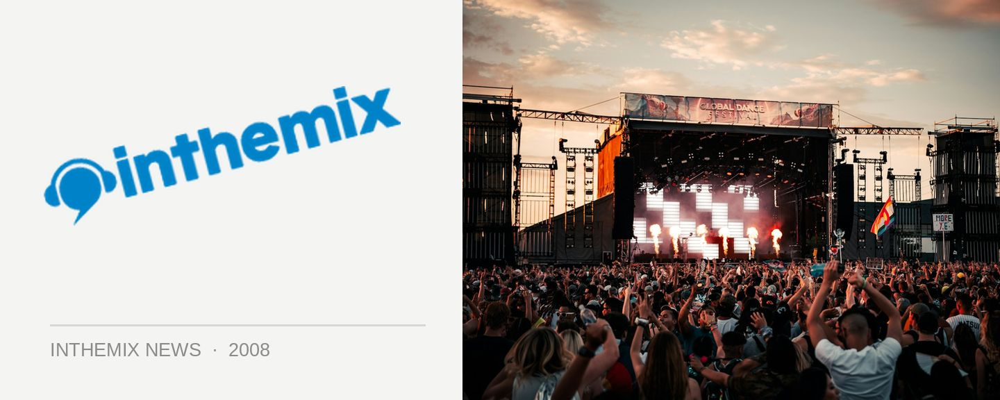

Parklife takes over Sydney & Brisbane - check out the photos!
Fuzzy’s big-ticket festival Parklife wound up its national run over the weekend, with the event taking over the Brisbane Botanic Gardens on Saturday before moving south to its spiritual home of Sydney for the final stage of the tour on Sunday. ITM has pics of all the action that went down, check them out now!
> Check out the photos from Parklife Sydney
> Check out the photos from Parklife Brisbane
When Parklife returned to Sydney on Sunday for the final date of its national tour, it was the biggest party yet in the event’s 10-year history. Crowds were estimated at over 40,000 people, and while it saw the Moore Park venue used to its full capacity, it was also utilised to its full potential as it was a smoothly-run affair in typical Fuzzy style. Sporting three massive outdoor stages as well as an undercover tent, the 2008 edition of Parklife had no ‘main stage’ as such, as both the artists and the punters themselves were dispersed evenly throughout the grounds during the day.
It was the high standard of the music that stuck out most at this year’s Parklife, arguably more so than any other major event in the past 12 months. A solid lineup of local DJs and live acts held things down during the first couple of hours, with Ashton Shuffle in particular attracting a seriously impressive crowd for their opening midday slot, but once the international guests kicked off at around 4pm it was time for some seriously memorable party action. Lesser known acts like Neon Neon and Metro Area kept the music aficionados happy, but they were balanced out by proven festival favourites like Plump DJs (who were sporting their new ‘decks n’ fx setup) and Soulwax, who delivered a massive set that demonstrated clearly why they’re considered the live pinnacle of the indie/electro sound.
As is often the case with many large-scale festivals, the final couple of hours brings with it the dilemma of having too many excellent acts playing at the one time than you’d ever possibly be able to catch. Never was this more true than with Parklife ‘08, which had Dizzee Rascal hyping up the crowd in one corner of the festival, 2 Many DJs creating hysteria a few inebriated stumbles away, Does It Offend You Yeah? bashing out their best up top while over on the western end of the grounds, festival headliners Goldfrapp were handing it over to house veteran Martin Solveig. No matter which stage you found yourself at, the music was cranking.
Wanna relive your festival experience as the dust settles form your long weekend? ITM’s Festival Page has the most comphrehensive range of news, DJ mixes, podcasts, videos and interviews that covers the entire Parklife line-up. You can find it all over at inthemix.com.au/parklife.